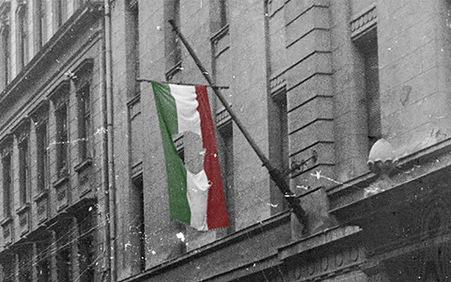

Az 56-os forradalom Tatán és Tatabányán
Az első forradalomhoz köthető tevékenyég Tatabányán Október 26.-án történt, amikor a VI-os aknánál gépkocsival érkező fiatalok rendszer ellenes röplapokat szórtak szét, de hamarosan letartóztatták őket. Délutánra elkezdődtek az első sztrájkok, amikor a Péch Antal Bányaipari Technikum tanulói az utcára vonultak. Rövidesen Felsőgallán Autóbuszközlekedési Vállalat dolgozói is csatlakoztak a diákokhoz. A tüntető csoport a megyei pártbizottsághoz, majd a Tatabányai Szénbányászati Tröszt igazgatóságához vonult. Eközben Óvárosban a letartóztatott fiatalok szabadon engedését követelték a Belügyminisztérium előtt. Délután öt óra körül elfoglalták a Bányász rádió stúdióját, hogy a követeléseiket bemondhassák. Ezt követően a városi pártbizottságot fogták körül. A tüntető tömeg ezután Újváros felé vette az irányt, ahol Hunyadi János Tiszti Továbbképző Iskola laktanyáját elfoglalva, megszerezték az ott tárolt fegyvereket. A laktanyában megszerzett fegyverekkel a felkelők teherautókon, csoportosan indultak Budapestre, hogy bekapcsolódjanak az ott zajló fegyveres küzdelembe, azonban a fővárost nagyon kevesen érték el, mivel Budakeszi térségében egy magyar katonai alakulat feltartóztatta őket. 1956. október 26-án megtörtént az első haláleset, a 30 éves Juhász József bányász halálának okát koponyalövésnek regisztrálták.
